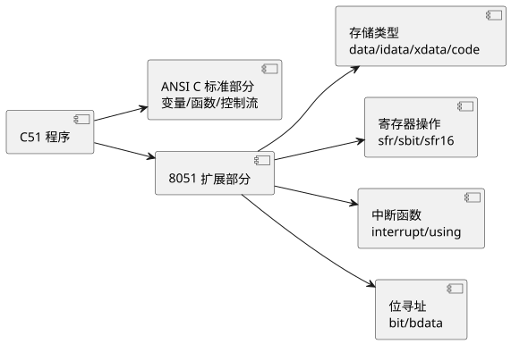

第 6 章 C51 程序设计基础
学习目标
- 理解 C51 与标准 ANSI C 的主要区别，掌握 C51 的扩展关键字与语法
- 掌握 data/idata/xdata/pdata/code 等存储类型修饰符的含义与适用场景
- 熟练使用 sfr/sbit 关键字操作特殊功能寄存器与位变量
- 掌握 C51 中断函数的写法，理解 interrupt/using 关键字与中断号映射
- 能够进行模块化编程（.h/.c 分离）并理解预处理、优化等级对代码体积的影响
6.1 C51 与标准 ANSI C 的区别
C51 是 Keil 公司为 8051 系列单片机设计的 C 语言编译器，它在 ANSI C（标准 C）基础上扩展了一系列针对 8051 体系结构的关键字与语法。由于 8051 是哈佛结构、有位寻址区、有特殊功能寄存器，这些硬件特性无法用标准 C 直接描述，因此 C51 的扩展是必要的。下表对比 C51 与标准 ANSI C 的主要区别：
| 对比项 | 标准 ANSI C | Keil C51 |
|---|---|---|
| 头文件 | stdio.h / stdlib.h 等 | reg52.h / STC89.h（芯片寄存器定义） |
| 数据类型 | char/int/long/float | 扩展 bit/sbit/sfr/sfr16，int 默认 16 位 |
| 存储类型 | 无（统一内存模型） | data/idata/xdata/pdata/code/bdata |
| 指针 | 统一指针（4 字节） | 区分通用指针（3 字节）与存储区指针（1~2 字节） |
| 函数 | 标准函数 | 扩展 interrupt/using/reentrant/compact 等 |
| 库函数 | printf/malloc 等完整 | 精简版，printf 需自定义 putchar，无 malloc（或精简） |
| 启动文件 | 无 | STARTUP.A51 初始化 RAM 与堆栈 |

查看 PlantUML 源码
@startuml
skinparam defaultFontName "Microsoft YaHei"
left to right direction
component "C51 程序" as A
component "ANSI C 标准部分\n变量/函数/控制流" as B
component "8051 扩展部分" as C
component "存储类型\ndata/idata/xdata/code" as D
component "寄存器操作\nsfr/sbit/sfr16" as E
component "中断函数\ninterrupt/using" as F
component "位寻址\nbit/bdata" as G
A --> B
A --> C
C --> D
C --> E
C --> F
C --> G
@enduml学习 C51 的核心是掌握"扩展部分"——存储类型和寄存器操作，因为它们直接对应 8051 的硬件结构。标准 C 部分的语法（if/for/while/函数调用）与 PC 上编程完全一致。
6.2 数据类型与存储类型
6.2.1 数据类型
C51 支持的数据类型及占用的字节数如下表。注意 8051 是 8 位机，int 类型默认为 16 位（2 字节），与 PC 上 32 位 int 不同，这是移植代码时需注意的。
| 类型 | 关键字 | 位数 | 字节数 | 取值范围 |
|---|---|---|---|---|
| 无符号字符 | unsigned char | 8 | 1 | 0 ~ 255 |
| 有符号字符 | signed char | 8 | 1 | -128 ~ 127 |
| 无符号整型 | unsigned int | 16 | 2 | 0 ~ 65535 |
| 有符号整型 | signed int | 16 | 2 | -32768 ~ 32767 |
| 无符号长整型 | unsigned long | 32 | 4 | 0 ~ 4294967295 |
| 有符号长整型 | signed long | 32 | 4 | -2147483648 ~ 2147483647 |
| 浮点型 | float | 32 | 4 | ±1.18e-38 ~ ±3.40e38（IEEE754） |
| 位型 | bit | 1 | 1（位） | 0 或 1，仅位寻址区 |
| 特殊位 | sbit | 1 | 1（位） | SFR 的某一位 |
| 特殊寄存器 | sfr | 8 | 1 | 直接映射 SFR 地址 |
| 16 位寄存器 | sfr16 | 16 | 2 | 映射连续两个 SFR（如 T0/T1） |
char 运算最快（单字节），int/long 运算需要调用库函数多字节处理，float 运算最慢（可能数百周期）。在性能敏感场景应尽量用 unsigned char，避免浮点运算。
6.2.2 存储类型
由于 8051 有多种存储空间（片内 RAM、片外 RAM、ROM），C51 用存储类型修饰符指定变量存放位置，这是 C51 与标准 C 最显著的差异：
| 存储类型 | 对应存储区 | 访问方式 | 速度 | 典型用途 |
|---|---|---|---|---|
| data | 片内 RAM 低 128B（00H~7FH） | 直接寻址 | 最快 | 频繁访问的全局/局部变量 |
| idata | 片内 RAM 全部 256B（00H~FFH） | 间接寻址（R0/R1） | 快 | 需要访问高 128B 的变量 |
| bdata | 位寻址区（20H~2FH） | 位寻址 | 快 | bit 变量与位操作 |
| xdata | 片外 RAM（最大 64KB） | DPTR 间接寻址 | 慢 | 大数组、显示缓冲区 |
| pdata | 片外 RAM 低 256B（分页） | R0/R1 间接寻址 | 中 | 外部 RAM 的快速访问分页 |
| code | 程序存储器 ROM（只读） | DPTR/MOVC | 慢 | 常量、字模表、查表数据 |
变量定义示例：
unsigned char data cnt = 0; // 快速访问的计数器
unsigned char idata buf[128]; // 内部 RAM 全部 256B 中的缓冲区
unsigned char xdata disp[1024]; // 外部 RAM 中的显示缓冲
unsigned char code font[] = { // ROM 中的字模表
0x3F, 0x06, 0x5B, 0x4F, 0x66
};
bit bdata flag_ready; // 位变量，位于位寻址区
6.3 特殊功能寄存器操作
8051 的所有片内外设都通过特殊功能寄存器（SFR）控制，C51 用 sfr 和 sbit 关键字将 SFR 地址映射为 C 变量，从而用熟悉的赋值语法操作硬件。
6.3.1 sfr 关键字
sfr 用于定义 8 位特殊功能寄存器，语法为 sfr 名字 = 地址;。这些定义通常已包含在 reg52.h 头文件中，无需用户重复定义。
#include <reg52.h>
// reg52.h 中已定义（用户通常无需重复定义）
// sfr P0 = 0x80; // P0 端口，地址 80H
// sfr P1 = 0x90; // P1 端口，地址 90H
// sfr TMOD = 0x89; // 定时器方式寄存器
// sfr TH0 = 0x8C; // 定时器 0 高字节
void main(void) {
P1 = 0x55; // 向 P1 端口输出 01010101
TMOD = 0x01; // 配置定时器 0 为模式 1（16 位）
TH0 = 0xFC; // 设置定时器初值
}
6.3.2 sbit 关键字
sbit 用于定义可位寻址的 SFR 的某一位，有三种写法：① sbit 名字 = SFR名^位序号;；② sbit 名字 = 字节地址^位序号;；③ sbit 名字 = 位地址;。第一种最常用。
#include <reg52.h>
sbit LED1 = P1^0; // P1.0 引脚，方法一（推荐）
sbit LED2 = 0x90 ^ 0; // 同上，方法二
sbit KEY = 0xB4; // P3.4 的位地址，方法三
sbit BEEP = P1^5; // 蜂鸣器接 P1.5
void main(void) {
LED1 = 0; // 点亮 LED1（位赋值）
LED1 = 1; // 熄灭 LED1
if (KEY == 0) { // 读按键状态
BEEP = 1; // 按键按下，开蜂鸣器
}
}
6.4 位操作与位变量
8051 的位寻址能力是其重要特色，C51 提供了 bit 类型和位操作运算符，让位级控制既高效又易读。
6.4.1 bit 变量
bit 类型变量存储在位寻址区（20H~2FH），每个变量只占 1 个比特，适用于标志位。注意 bit 变量不能定义数组，也不能用作函数指针。
bit flag_recv = 0; // 接收完成标志
bit flag_send = 0; // 发送完成标志
void main(void) {
while (1) {
if (flag_recv) { // 检测标志位
flag_recv = 0; // 清除标志
flag_send = 1; // 置发送标志
}
}
}
6.4.2 位操作运算符
对寄存器进行位级控制时，常用 & | ~ ^ << >> 等位运算符。这是嵌入式编程的核心技巧：
#include <reg52.h>
void main(void) {
P1 = P1 | 0x01; // 置位 P1.0，其余不变（或运算）
P1 = P1 & ~0x01; // 清零 P1.0，其余不变（与运算+取反）
P1 = P1 ^ 0x01; // 翻转 P1.0（异或运算）
P1 = 0x01 << 3; // P1.3 置 1，等价于 P1 = 0x08
if ((P1 & 0x0F) == 0x0F) { // 判断低 4 位是否全为 1
// ...
}
}
6.5 函数与中断函数写法
C51 的普通函数与标准 C 基本一致，但中断函数是 C51 的重要扩展，需要用 interrupt 关键字声明，并通过中断号关联到具体的中断源。
6.5.1 普通函数
unsigned char add(unsigned char a, unsigned char b) {
return a + b;
}
void delay_ms(unsigned int ms) {
unsigned int i, j;
for (i = 0; i < ms; i++)
for (j = 0; j < 110; j++);
}
6.5.2 中断函数
中断函数的语法为：void 函数名(void) interrupt 中断号 [using 寄存器组号]。中断函数不能有参数和返回值。MCS-51 的中断号映射如下表：
| 中断号 | 中断源 | 入口地址 | 默认优先级 |
|---|---|---|---|
| 0 | 外部中断 0（INT0） | 0003H | 最高 |
| 1 | 定时器 0（T0） | 000BH | 次高 |
| 2 | 外部中断 1（INT1） | 0013H | 中 |
| 3 | 定时器 1（T1） | 001BH | 次低 |
| 4 | 串行口（UART） | 0023H | 最低 |
| 5 | 定时器 2（T2，仅 8052/STC） | 002BH | — |
#include <reg52.h>
sbit LED = P1^0;
// 定时器 0 中断函数，中断号 1
void timer0_isr(void) interrupt 1 {
TH0 = 0xFC; // 重新装载初值（1ms @11.0592MHz）
TL0 = 0x18;
LED = ~LED; // 翻转 LED
}
void main(void) {
TMOD = 0x01; // T0 模式 1（16 位）
TH0 = 0xFC;
TL0 = 0x18;
ET0 = 1; // 允许 T0 中断
EA = 1; // 开总中断
TR0 = 1; // 启动 T0
while (1); // 主循环空转，等待中断
}
6.5.3 using 关键字
using n 指定中断函数使用第 n 组工作寄存器（n=0~3），可避免中断与主程序争夺 R0~R7。不写 using 时，编译器会自动 PUSH/POP 现场寄存器，代码体积略大。对实时性要求高的高频中断建议显式指定 using。
void timer0_isr(void) interrupt 1 using 1 { // 使用第 1 组寄存器
TH0 = 0xFC;
TL0 = 0x18;
LED = ~LED;
}
6.6 模块化编程
当程序规模变大后，将所有代码堆在 main.c 中会难以维护。模块化编程将不同功能拆分到独立的 .c/.h 文件中，每个模块对外暴露接口、对内隐藏实现，是工程化开发的基本规范。
6.6.1 头文件与源文件分离
以 LED 模块为例，创建 led.h 声明接口，led.c 实现功能：
// ===== led.h =====
#ifndef __LED_H__
#define __LED_H__
#include <reg52.h>
sbit LED1 = P1^0;
sbit LED2 = P1^1;
void led_on(unsigned char n);
void led_off(unsigned char n);
void led_toggle(unsigned char n);
#endif
// ===== led.c =====
#include "led.h"
void led_on(unsigned char n) {
if (n == 1) LED1 = 0;
else if (n == 2) LED2 = 0;
}
void led_off(unsigned char n) {
if (n == 1) LED1 = 1;
else if (n == 2) LED2 = 1;
}
void led_toggle(unsigned char n) {
if (n == 1) LED1 = ~LED1;
else if (n == 2) LED2 = ~LED2;
}
// ===== main.c =====
#include "led.h"
void delay_ms(unsigned int ms) {
unsigned int i, j;
for (i = 0; i < ms; i++)
for (j = 0; j < 110; j++);
}
void main(void) {
while (1) {
led_on(1);
delay_ms(500);
led_off(1);
led_toggle(2);
delay_ms(500);
}
}
#ifndef __XXX_H__ / #define / #endif 防止重复包含；sbit/sfr 定义放在 .h 中供多文件共享；全局变量在 .c 中定义，在 .h 中用 extern 声明。
6.7 常用预处理与头文件
C51 中常用的预处理指令与头文件如下：
- #include <reg52.h>：包含 STC 的所有 SFR 定义（兼容 8052），是最常用的头文件。
- #include <intrins.h>：包含内联函数，如
_nop_()（空操作一个机器周期）、_cror_()/_crol_()（循环移位）等。 - #define：定义常量与宏，如
#define FOSC 11059200UL。 - #ifndef / #define / #endif：防止头文件重复包含。
- #pragma：编译器特定指令，如
#pragma optimize(8)指定优化等级。
#include <reg52.h>
#include <intrins.h>
#define FOSC 11059200UL // 晶振频率
#define BAUD 9600 // 波特率
#define uchar unsigned char
#define uint unsigned int
void main(void) {
uchar i;
P1 = 0xFE; // 11111110
while (1) {
for (i = 0; i < 7; i++) {
P1 = _crol_(P1, 1); // 循环左移一位（流水灯）
_nop_(); // 空操作，延时一个机器周期
}
}
}
6.8 Keil 优化等级与代码体积
Keil C51 编译器提供 0~9 共 10 个优化等级，等级越高生成的代码体积越小、运行越快，但调试难度也越大（变量可能被优化掉）。优化等级通过 Project → Options for Target → C51 标签设置。
| 等级 | 优化内容 | 代码体积 | 调试友好度 |
|---|---|---|---|
| Level 0 | 基本不优化 | 最大 | 最好（变量可观察） |
| Level 1~3 | 常量折叠、简单折叠 | 较大 | 较好 |
| Level 4~6 | 公共子表达式消除、循环优化 | 中等 | 中等 |
| Level 7~8 | 寄存器优化、窥孔优化 | 小 | 较差 |
| Level 9 | 交叉模块优化（Link 级） | 最小 | 差 |
本章小结
- C51 是 Keil 为 8051 设计的 C 编译器，在 ANSI C 基础上扩展了存储类型、sfr/sbit、interrupt 等针对 8051 硬件的关键字。
- 8051 的 int 默认 16 位；数据类型 char 最快，float 最慢，应优先使用 unsigned char。
- 存储类型 data/idata/xdata/pdata/code/bdata 决定变量存放位置：data 最快用于频繁访问变量，xdata 用于大数组，code 用于常量与字模。
- sfr 用于定义 8 位 SFR，sbit 用于定义 SFR 的某一位，二者是 C51 操作硬件寄存器的核心。
- bit 类型变量存储在位寻址区，占 1 比特；位操作运算符（&|~^<<>>）是寄存器位级控制的关键技巧。
- 中断函数用 interrupt 关键字声明，中断号 0~5 对应 INT0/T0/INT1/T1/UART/T2；using 可指定工作寄存器组减少现场保护开销。
- 模块化编程通过 .h/.c 分离实现，头文件用 #ifndef 防止重复包含，全局变量 extern 声明。
- Keil 优化等级 0~9：开发阶段用低等级便于调试，发布时用高等级减小体积。
思考题与习题
- C51 与标准 ANSI C 的主要区别有哪些？为什么要进行这些扩展？
- 说明 data、idata、xdata、pdata、code 五种存储类型对应的存储区与访问速度差异，并各举一个适用场景。
- 使用 sfr 和 sbit 定义定时器 1 的 TMOD 寄存器（地址 89H）和 P1.5 引脚，并写出将 P1.5 置 1 的代码。
- 编写一个 4×4 字节数组，分别存放在 data 和 xdata 中，说明两者访问方式的差异。
- 编写一个定时器 0 中断函数（中断号 1），要求每 1ms 翻转一次 P1.0，并使用第 1 组工作寄存器。
- 创建一个按键模块 key.h/key.c，定义 4 个按键（P3.0~P3.3），提供 key_scan() 函数返回按下的键号（0 表示无按键）。说明模块化编程中头文件如何防止重复包含。
参考文献
- Keil 官方. C51 User's Guide [Z]. 2024. https://www.keil.com/support/man/docs/c51/
- 张毅刚. 单片机原理及应用——C51 编程 + Proteus 仿真（第 4 版）[M]. 北京：高等教育出版社, 2021.
- 郭天祥. 新概念 51 单片机 C 语言教程 [M]. 北京：电子工业出版社, 2018.
- Kernighan B W, Ritchie D M. The C Programming Language (2nd Edition) [M]. Prentice Hall, 1988.
- STC 官方. STC89C52RC 数据手册 [Z]. 2024. https://www.stcmcudata.com/